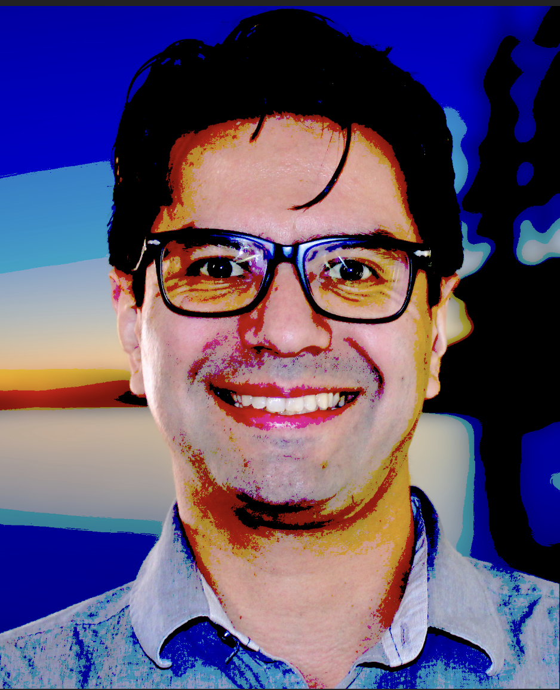

About Me
Welcome to my website! I am excited to take you on a journey through my life, enriched by the experiences I had growing up in the vibrant San Fernando Valley. This community instilled in me a deep appreciation for culture and diversity, which fueled my passion for self-discovery and creativity.
 As a teenager, I explored various paths, from playing baseball to embarking on solitary nighttime jogs. These experiences kindled a desire for personal growth and set me on a quest for direction. However, it wasn't until I attended community college that my life took a significant turn.
As a teenager, I explored various paths, from playing baseball to embarking on solitary nighttime jogs. These experiences kindled a desire for personal growth and set me on a quest for direction. However, it wasn't until I attended community college that my life took a significant turn.
There, I had the incredible fortune of crossing paths with a brilliant and patient PhD advisor, John Krueger.  Under John's mentorship, I discovered the power of research and its ability to shape our understanding of the world. His guidance was invaluable in helping me choose a research topic that resonated deeply with me, igniting my curiosity and fueling my academic pursuits. Throughout the trials and challenges of the research process, John stood by my side, offering unwavering support and wisdom.
While diving into the world of academia, I found solace and companionship in my faithful feline friends. My cat companions, with their endearing presence and unwavering loyalty, provided comfort during late-night study sessions and offered a listening ear when I needed it most. They became an integral part of my journey, reminding me to appreciate the small joys and find balance amidst the rigors of academic pursuit. This website serves as a testament to the transformative power of mentors like John Krueger and the profound impact of our animal companions. It is a space where I strive to share the lessons I've learned, the challenges I've faced, and the triumphs I've celebrated along the way. Join me as we navigate the realms of self-discovery, research, and the joys of companionship. Let's explore the vast landscape of knowledge and creativity together, inspired by the invaluable guidance of mentors and the unconditional love of our faithful feline friends. Welcome once again, and let's embark on this extraordinary journey together, embracing the lessons of the past and the possibilities of the future!
- University of California Los Angeles, Bachelor's of Science in Mathematics;
- University of North Texas , Masters and PhD in Mathematics;
- Published research in the Notre Dame Journal of Formal Logic ;